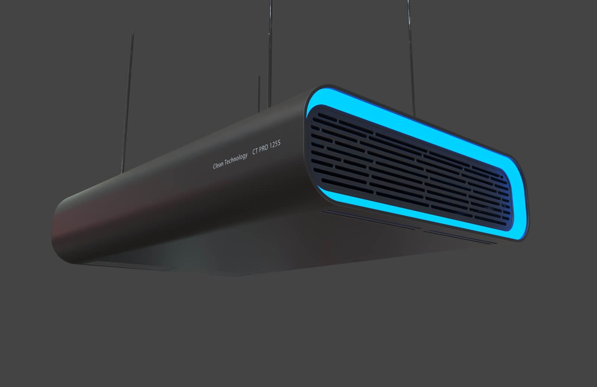

Nanogenair ® 50 hava sterilizasyon cihazı, kapalı ve hava besleme santrali olmayan alanlarda istenmeyen mikroorganizmaların %99,9’unu havadayken yok eder. Buna virüsler de dahildir.
Hafif ve taşınabilir olması sayesinde, cihazınızı istediğiniz odaya taşıyarak, güvenle kullanabilirsiniz. Eğer arzu ederseniz cihasınızı duvara da monte ederek sabitleyebilirsiniz.
Nanogenair ® 50, yaklaşık 50 metrekarelik bir odada hijyen kuşağı yaratmak için tasarlanmıştır. Patenetli nano teknolojisi sayesinde kısa sürede havayı temizler. Bu işlemi yaparken de 46-55 dB gibi düşük sesle çalışır. Boyutları 160*400*550mm olan Nanogenair ® 50, 7/24 sorunsuz çalışır.
Metrekare ölçüsü dışında odayı kullanacak insan sayısı ve m3 ölçülerine göre daha hassas bir ayarlama yapmanız gerekiyorsa, lütfen bize 0212 xxx xx xx numaralı telefonlarımızdan ulaşınız.